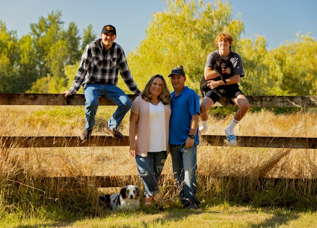

Biography:
Hello! My name is Jessica. I'm from a small town in the great Pacific Northwest. I was born and raised here and have also raised my own family here. I'm married to my husband, Trevor, and have two boys Colby (20) and Carson (16) and two dogs. I work for a regional insurance company, in IT, as a Software Engineering Manager. I'm currently enrolled at Code Fellows and looking forward to building great websites!
Work Experience and Education:
- Software Engineering Manager @ Mutual of Enumclaw
- Studying Software Development @ Code Fellows
- Green River College
- White River High School
A Few of My Favorite Things:
- My family (except for the teenager some days!)
- My dogs (I have an Australian Shepherd and a Black Lab)
- Traveling (especially to sunny, warm, beach locations)
- Reading
- Spending time with friends and family
Top Ten Places to Visit:
- Atlantis, Bahamas
- Turks and Caicos
- Maui, Hawaii
- US Virgin Islands
- Sevilla, Spain
- Grand Canyon, Arizona
- Disneyland, California
- Disney World, Florida
- Alaska Cruise
- Las Vegas, Nevada